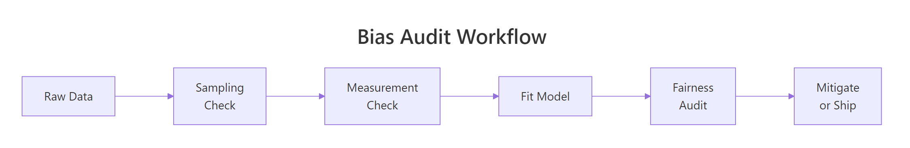
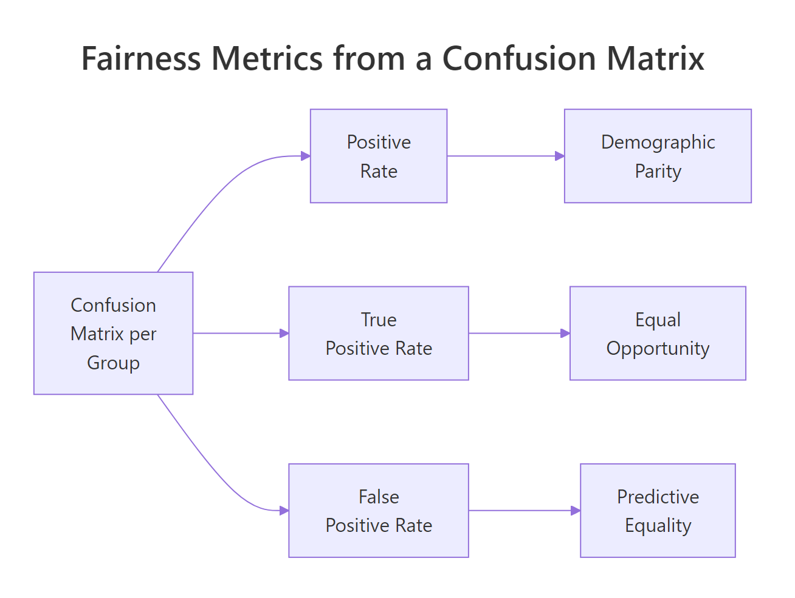
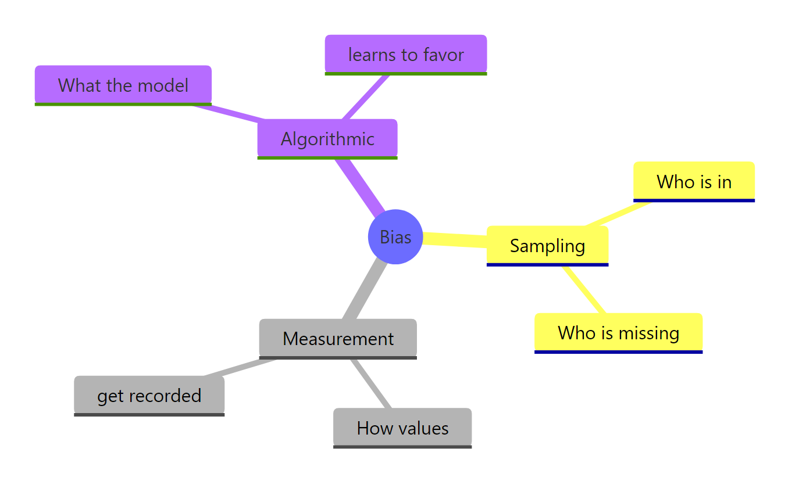

Bias in Data and Models: Find It With R Before Your Results Mislead Anyone
Bias is a systematic error that pushes your numbers, and the decisions made from them, in a wrong direction. This guide shows how to detect bias across three layers: the sample you collected, the way it was measured, and the model you trained on it. All examples run on base R plus dplyr and ggplot2, so you can audit any analysis without installing specialised fairness packages.
What does bias actually mean in data analysis?
Most bias bugs hide in plain sight. A model that looks accurate overall while quietly failing one group. A survey whose results don't match the population it claims to describe. A metric that means slightly different things for different people. Before defining the three flavours of bias, look at what biased data actually does to a result you might be tempted to trust.
The block below builds a tiny synthetic loan dataset where two groups, call them A and B, have the same true creditworthiness on average. Watch what happens to the observed approval rates anyway.
The two groups have nearly identical mean scores, 650.6 versus 650.4, yet group A is approved 70% of the time and group B only 45%. A 25-point gap from a process that, on the underlying number, should be the same. That is what bias looks like in a single table: a measurable distance between what you reported and what should be true.
Three different culprits can produce a gap like this. We'll meet each in turn:
- Sampling bias, the wrong people ended up in your dataset
- Measurement bias, the right people ended up in your dataset, but their values were recorded differently
- Algorithmic bias, the people and the values are fine, but a model learned to treat them differently
Try it: Re-run the loan generator with set.seed(99) and confirm the approval gap stays roughly the same size. The point is to show that the gap is a property of the process, not a quirk of one random draw.
Click to reveal solution
Explanation: The gap is generated by the data-creation process, not by the random seed. Different seeds give slightly different numbers, but the systematic 25-point gap is built into how the synthetic outcomes were drawn.
How do you detect sampling bias in R?
Sampling bias means some members of the target population were more likely to end up in your dataset than others. A satisfaction survey that only reaches customers who finished checkout misses everyone who abandoned the cart. A clinical trial run only at urban hospitals misses rural patients. The numbers from a biased sample look perfectly normal; they just describe the wrong population.

Figure 1: A bias audit moves left-to-right through three checks before the model ever ships.
The simplest detection trick is to compare your sample's group proportions to a known reference, the true population, a census, or a prior wave of the same survey. If the gap is bigger than chance, the chi-squared test will flag it.
A p-value below 0.05 means the gap between your sample and the population is too big to blame on luck. Here it is essentially zero, group A is wildly over-represented. In a real audit, you would now ask why: maybe the recruitment ad ran on a platform group A uses more, or the consent form was only translated into one language. The chi-squared test does not tell you the cause; it tells you to stop and look.
Statistical significance is one lens. The next is the 80% rule (also called the four-fifths rule), borrowed from US employment law: any group whose representation ratio falls below 0.8 is considered substantially under-represented.
Group B's representation ratio is 0.58, well below the 0.8 threshold, it is substantially under-sampled. This per-group view is more actionable than a single p-value because it points directly at the group you need to recruit more of.
Try it: Write a small function that takes a vector of group labels and a named vector of expected population shares, then returns the chi-squared p-value. This is the audit primitive you'll reach for whenever a fresh dataset arrives.
Click to reveal solution
Explanation: The function reorders the observed counts to match the expected-share vector, runs chisq.test(), and returns just the p-value so you can use it inside a pipeline.
How do you spot measurement bias in your data?
Measurement bias is sneakier than sampling bias because the right people are in the dataset, but the instrument records different values for the same underlying truth across groups. A self-reported height is on average a couple of centimetres taller than a calibrated one. A self-reported income skews lower for high earners and higher for low earners. A pulse oximeter calibrated on light skin reads systematically wrong on dark skin. The summary statistics look healthy; the meaning of each number is not.
The block below simulates a realistic case: group A is measured by a calibrated tape (no error), group B by self-report (a 3 cm upward bias plus more noise). The true heights are identical between the two groups by construction.
Group B's measured mean is about 3 cm higher than its true mean, exactly the bias we built in. Crucially, if you only had the measured column (which is the realistic case in a real dataset), you would conclude that group B is taller than group A and never know that the conclusion is an instrument artefact.
The fix needs a gold-standard subsample: a small set of cases where both the cheap and the expensive measurements exist. From that subsample you estimate the bias, then subtract it from the rest of group B.
After applying the correction, both groups land near the true mean of 170 cm. The technique generalises: any time you suspect the instrument differs across groups, set aside a calibration subset, estimate the bias, and apply it.
Try it: Given the heights dataframe with true_height and measured columns, compute the per-group mean error and identify which group is biased.
Click to reveal solution
Explanation: Subtracting true_height from measured gives the per-row error. Averaging by group reveals the systematic bias, group A is unbiased, group B carries a +3 cm shift.
How do you measure algorithmic bias in a model's predictions?
Algorithmic bias is the third layer. Even if your sample is representative and your measurements are clean, a model trained on that data can still produce systematically different errors for different groups. This happens when the historical outcomes the model learns from already encode unequal treatment, or when a feature acts as a proxy for the protected attribute.

Figure 2: Three fairness metrics derived from one per-group confusion matrix.
To put numbers on it, fit a logistic regression to the biased loan data from earlier and look at the predictions group by group.
The model is score-only, so its raw positive rate is the same in both groups, a useful sanity check. The bias only shows up when you compare predictions against the actual approval outcomes, which is what a confusion matrix does.
Three fairness metrics fall out of these four numbers per group. Each one captures a different definition of "fair," and they all conflict with each other when base rates differ, so you must pick the one that matches the harm you are trying to prevent.
Demographic parity asks whether the model's positive rate is the same across groups:
$$\text{DP}_g = \frac{TP_g + FP_g}{TP_g + FP_g + FN_g + TN_g}$$
Equal opportunity asks whether the true positive rate (the share of qualified applicants who get approved) is the same:
$$\text{EO}_g = \frac{TP_g}{TP_g + FN_g}$$
Predictive equality asks whether the false positive rate (the share of unqualified applicants who incorrectly get approved) is the same:
$$\text{PE}_g = \frac{FP_g}{FP_g + TN_g}$$
Where, in each formula, $g$ indexes the protected group and the four counts come from that group's confusion matrix. If formulas aren't your preferred way to learn, skip to the code, the table at the end of this section says the same thing.
Demographic parity is roughly equal at 0.58, and equal opportunity is roughly equal at 0.61, the score-only model treats both groups the same when you measure it through those lenses. Predictive equality is the one that diverges: group B has a 5-point higher false positive rate, meaning the model wrongly approves more unqualified group B applicants. That is a real harm to the applicants whose loans go bad.
A picture makes the comparison faster:
Try it: Change the classification threshold from 0.5 to 0.6 and re-compute the demographic parity. Predict the direction of the change before you run the code.
Click to reveal solution
Explanation: Raising the threshold from 0.5 to 0.6 makes the model stricter, so the positive rate drops in both groups by roughly the same amount. Demographic parity stays balanced because the model uses the same threshold for everyone, but, as you'll see in the next section, that uniform rule is exactly what creates downstream unfairness when groups have different score distributions.
What can you do once you find bias?
Detection without mitigation is just a status report. Once you know which layer carries the bias, sampling, measurement, or algorithm, there are three practical levers that work without rebuilding your entire pipeline.
The first lever is reweighting: assign higher importance to under-represented samples when fitting the model. In glm() this is the weights argument. The second is threshold adjustment: pick group-specific decision thresholds that equalise a chosen fairness metric. The third is feature surgery: drop or transform variables that act as proxies for the protected attribute, even if the protected attribute itself is not in the model.
The block below applies threshold adjustment to the loans model. The goal is to bring the false positive rate gap under five percentage points.
Group B's false positive rate is now 0.493, slightly below group A's 0.510. The gap is closed, but at a cost: group B's true positive rate also dropped from 0.616 to 0.580, meaning a few more qualified group-B applicants get rejected. This is the central trade-off in fairness work, every mitigation moves something somewhere.
Try it: Fit the loan model with reweighting, give group B observations twice the weight of group A, and compute the new demographic parity ratio.
Click to reveal solution
Explanation: Because the model only uses score, reweighting on group does not change the score-to-prediction mapping. Reweighting moves the needle when there are features whose relationships differ across groups, try adding a noisy second predictor and watch the result change.
Practice Exercises
These three problems combine the techniques above. Each uses fresh variable names so you can run them without colliding with the tutorial's data.
Exercise 1: Run a full audit on a hiring dataset
Simulate a hiring dataset of 800 applicants with two groups and a hired outcome where group A is hired 65% of the time and group B 40%. Run all three checks: sampling representation, measurement (compare a noisy and a clean version of interview_score), and algorithmic (fit a logistic regression and report demographic parity).
Click to reveal solution
Explanation: Sampling is fine (rep ratios near 1). Measurement is biased, group B's noisy scores are about 3 points lower than the clean truth. The model, trained on the clean column, still produces a 25-point demographic-parity gap because the outcome it was trained on is biased. Fixing the model alone would not be enough.
Exercise 2: Pick the right fairness metric for the harm
You are auditing a loan-default model where a false positive (wrongly approving someone who defaults) ruins an applicant's credit history for years, while a false negative (wrongly rejecting someone who would have repaid) means they have to apply elsewhere. Write a short R chunk that prints which fairness metric, demographic parity, equal opportunity, or predictive equality, best matches this harm pattern, with a one-line comment justifying the choice.
Click to reveal solution
Explanation: When the harm is concentrated in false positives, predictive equality is the right lens. Demographic parity ignores who is qualified at all, and equal opportunity targets false negatives. Always derive the metric from the harm, not the other way around.
Exercise 3: Compare two mitigation strategies on the same model
Take the loans model from the tutorial. Apply (a) reweighting with group B at weight 2 and (b) a per-group threshold of 0.55 for group B. Report which mitigation produces a smaller demographic parity gap. Use distinct variable names so the tutorial state is preserved.
Click to reveal solution
Explanation: On this score-only model, reweighting leaves the per-group positive rates identical (the score-to-probability mapping doesn't depend on the group), while the per-group threshold creates a small parity gap as a side effect of equalising the false positive rate. The lesson: a mitigation that improves one fairness metric usually moves another in the opposite direction.
Complete Example: An end-to-end salary audit
This pipeline ties everything together, sampling, measurement, model, mitigation, on a fresh synthetic dataset.
The audit caught bias at every layer. Sampling: a chi-squared p of 0.001 says the 55/45 split is significantly different from the assumed 50/50 reference. Measurement: the gold-standard subsample reveals reported salaries under-state group B by about $2,000. Algorithm: the single-feature model has identical positive rates per group on paper, but the per-group true positive rate is 0.345 for A and 0.249 for B, qualified group B candidates are missed at a higher rate. Lowering the group-B threshold to 0.42 closes the equal-opportunity gap to less than half a percentage point, at the cost of a slightly higher group-B false positive rate. Every fix gets logged in the same audit report so reviewers can see exactly what was done and why.
Summary

Figure 3: The three places bias enters a data analysis.
| Bias type | What it is | How to detect it in R | How to mitigate |
|---|---|---|---|
| Sampling | The wrong people are in the dataset | chisq.test() against a known reference; 80% representation rule |
Re-collect, post-stratify, or reweight |
| Measurement | The right people, the wrong values | Compare against a gold-standard subsample | Subtract per-group correction factors |
| Algorithmic | A model that errs differently across groups | Per-group confusion matrix → demographic parity, equal opportunity, predictive equality | Reweighting, per-group thresholds, feature surgery |
The most important rule is also the easiest to forget: fairness metrics conflict with each other when groups have different base rates, so you must choose the metric that matches the harm you are trying to prevent. Equal opportunity protects qualified people from missed approvals; predictive equality protects unqualified people from costly false approvals; demographic parity enforces equal positive rates regardless of qualification. Pick deliberately, document the choice, and report the trade-off.
References
- Wickham, H. & Grolemund, G., R for Data Science (2nd ed.). Link
- Mehrabi, N. et al., A Survey on Bias and Fairness in Machine Learning. ACM Computing Surveys (2021). Link
- Kozodoi, N. & Varga, T., fairness R package vignette. Link
- Hardt, M., Price, E., & Srebro, N., Equality of Opportunity in Supervised Learning. NeurIPS (2016). Link
- Barocas, S., Hardt, M., Narayanan, A., Fairness and Machine Learning. Link
- Wiśniewski, J. & Biecek, P., fairmodels: A Flexible Tool for Bias Detection. R Journal (2022). Link
- Angwin, J. et al., Machine Bias (COMPAS investigation), ProPublica. Link
- US Equal Employment Opportunity Commission, The Four-Fifths (80%) Rule. Link
Continue Learning
- Data Ethics in R, the questions to ask before you run any of the audits in this guide.
- R and the Reproducibility Crisis, once your analysis is unbiased, make sure someone else can re-run it.
- Communicating Uncertainty in R, show your audited results without overstating their certainty.